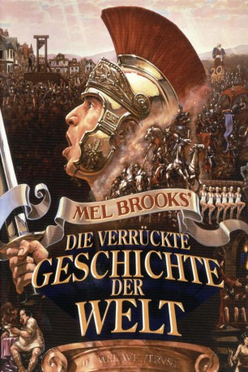

#6010 Mel Brooks - Die verrückte Geschichte der Welt
Alternativ: History of the World: Part I
 
 IMDB-Wertung: 6.9 / 10
IMDB-Wertung: 6.9 / 10  Metascore: 0
Metascore: 0 
Die Weltgeschichte als bunter Reigen von ihren Anfängen bis zur Zukunft, wobei konsequent mit bislang herrschenden falschen Vorstellungen aufgeräumt wird: zeitgenössische Kritik an Höhlenmalerei in der Steinzeit, Moses ungeschickter Umgang mit den Gebotstafeln, der erste Auftritt des Stand-up-Philosophen Comicus in Caesars Palast, die Wahrheit über das letzte Abendmahl, die spanische Inquisition als Musical-Nummer und obszöne Spielchen zur Zeit der Französischen Revolution.
Jahr: 1981
Dauer: 92 Minuten
FSK: 16
Land: USA Studio: 20th Century FoxTonspuren:
Untertitel: Deutsch,
Auflösung: 1080p (1920x816) Größe: 5365 MB
Genre: Komödie
Regisseur:  Mel Brooks
Mel Brooks
Drehbuch: Abdel Raouf Dafri
Soundtrack:
Darsteller:
 Mel Brooks als Moses / Comicus / Torquemada / Jacques / King Louis XVI
Mel Brooks als Moses / Comicus / Torquemada / Jacques / King Louis XVI Dom DeLuise als Emperor Nero
Dom DeLuise als Emperor Nero Madeline Kahn als Empress Nympho
Madeline Kahn als Empress Nympho Harvey Korman als Count de Monet
Harvey Korman als Count de Monet Cloris Leachman als Madame Defarge
Cloris Leachman als Madame Defarge- Ron Carey als Swiftus
- Gregory Hines als Josephus
- Pamela Stephenson als Mademoiselle Rimbaud
- Shecky Greene als Marcus Vindictus
 Sid Caesar als Chief Caveman
Sid Caesar als Chief Caveman- Mary-Margaret Humes als Miriam
 Orson Welles als Narrator
Orson Welles als Narrator- Michael Champion als Prehistoric Man
- Howard Morris als Court Spokesman - The Roman Empire
- Charlie Callas als Soothsayer - The Roman Empire
 Paul Mazursky als Roman Officer - The Roman Empire
Paul Mazursky als Roman Officer - The Roman Empire- Jack Riley als Stoned Soldier #2 - The Roman Empire
- Art Metrano als Leonardo DaVinci - The Roman Empire
- Henny Youngman als Chemist - The Roman Empire
 Fritz Feld als Maitre 'D - The Roman Empire
Fritz Feld als Maitre 'D - The Roman Empire Hugh M. Hefner als Entrepreneur - The Roman Empire
Hugh M. Hefner als Entrepreneur - The Roman Empire Barry Levinson als Column Salesman - The Roman Empire
Barry Levinson als Column Salesman - The Roman Empire- Lee Delano als Wagon Driver - The Roman Empire
 Johnny Silver als Small Liar - The Roman Empire
Johnny Silver als Small Liar - The Roman Empire John Hurt als Jesus - The Roman Empire
John Hurt als Jesus - The Roman Empire Sandy Helberg als Disciple - The Roman Empire
Sandy Helberg als Disciple - The Roman Empire- Jeana Keough als Vestal Virgin - The Roman Empire
- Lou Mulford als Vestal Virgin - The Roman Empire
- Jackie Mason als Jew #1 - The Spanish Inquisition
- Phil Leeds als Chief Monk - The Spanish Inquisition
- Jack Carter als Rat Vendor - The French Revolution
- Andréas Voutsinas als Bearnaise - The French Revolution
- Spike Milligan als Monsieur Rimbaud - The French Revolution
 John Hillerman als Rich Man - The French Revolution
John Hillerman als Rich Man - The French Revolution Sydney Lassick als Applecore Vendor - The French Revolution
Sydney Lassick als Applecore Vendor - The French Revolution Andrew Sachs als Gerard - The French Revolution
Andrew Sachs als Gerard - The French Revolution Nigel Hawthorne als Citizen Official - The French Revolution
Nigel Hawthorne als Citizen Official - The French Revolution Royce D. Applegate als Coming Attractions
Royce D. Applegate als Coming Attractions- Bea Arthur als Dole office clerk , uncredited
- Ava Cadell als Bit Part , uncredited
- Denise McKenna als Nun , uncredited
- Rudy De Luca als Prehistoric Man / Captain Mucus - The Roman Empire
- Leigh French als Prehistoric Woman
- Richard Karron als Prehistoric Man
- Susette Carroll als Prehistoric Man
- Sammy Shore als Prehistoric Man
- J.J. Barry als Prehistoric Man
- Earl Finn als Prehistoric Man / Disciple - The Roman Empire
- Suzanne Kent als Prehistoric Man
- Dena Dietrich als Competence - The Roman Empire
Datei: X:\1981\Mel Brooks - Die verrückte Geschichte der Welt (1981, FSK16, 1920x816).mkv seit 20.04.2017
Festplatte: HD 1980-1986
 Es gibt insgesamt 33 Filme in der Gruppe '1981'
Es gibt insgesamt 33 Filme in der Gruppe '1981'